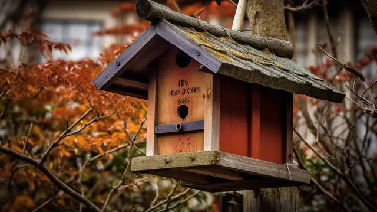
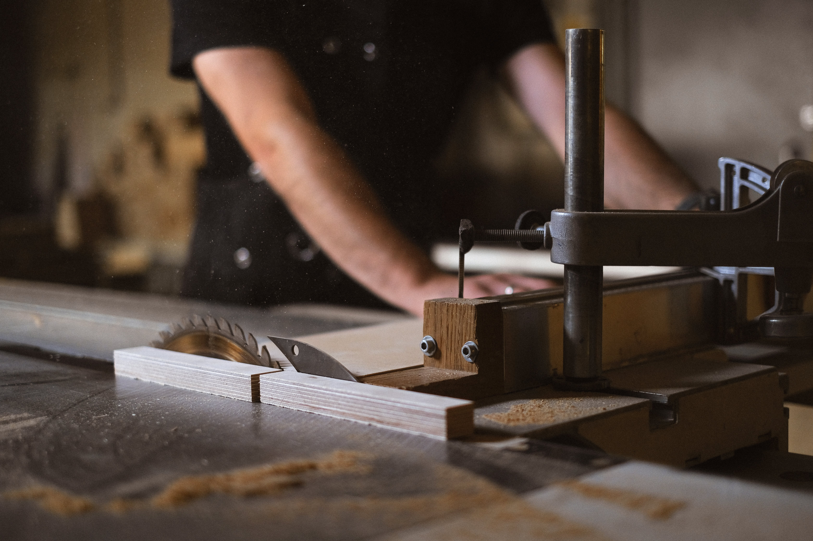

Discover the charm of woodworking with The River Post's Making a Bird House Project. Whether you're a novice or a seasoned woodworker, this project promises a delightful experience as you craft a cozy haven for your avian neighbors.
-
Our step-by-step guide ensures that every cut and nail brings you closer to creating a functional and stylish birdhouse. What sets our project apart is its accessibility – requiring only basic tools and easily obtainable materials, making it an ideal venture for all.
-
Explore the nuances of wood selection, learn the art of construction, and witness your backyard transform into a haven for feathered friends. Our comprehensive instructions, accompanied by vivid visuals, guarantee a rewarding journey, turning your woodworking dreams into a tangible masterpiece.
-
Embrace the joy of woodworking with The River Post's Making a Bird House Project – where simplicity meets creativity, and every crafted piece is a testament to your passion.
-
Let The River Post be your companion in turning your woodworking dreams into tangible, beautiful realities.
Build Your Own Birdhouse!
Materials Gathering: Collect the essential materials for your birdhouse project, including a wooden board, screws, a saw, drill, measuring tape, and sandpaper. Ensure that the wood is untreated and safe for birds. Organize your workspace, and have all tools within easy reach.
-
Cutting and Assembly: Follow precise measurements outlined in our guide to cut the wooden pieces for the birdhouse. Use the saw to create the required shapes for the roof, walls, and base. Assemble the cut pieces according to the provided instructions, using a drill for secure and precise connections.
-

Decorating Your Birdhouse: Embrace creativity by adding personal touches to your birdhouse. Consider painting, staining, or decorating with non-toxic materials. Ensure the decorative elements do not interfere with the birdhouse's functionality. Allow any paints or finishes to dry completely before proceeding.
-
Mounting Your Birdhouse: Choose an appropriate location for your birdhouse, considering factors like sunlight, wind, and potential predators. Securely mount the birdhouse on a pole, tree, or building exterior, ensuring stability. Observe as feathered friends make your birdhouse their home and enjoy the delightful addition to your outdoor space.
-